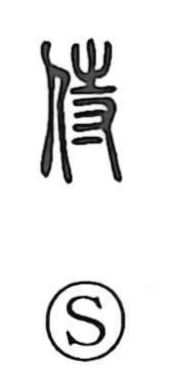

侍

Uncategorized
Kun: saburau, haberu, samurai | On: ji, shi
to attend ・ to serve ・ attendant ・ samurai
Explanation
侍 is a phono-semantic character: the person radical 亻 signals a human actor, while 寺 provides the sound (ji) and, in early usage, the idea of serving in close attendance. In antiquity, court attendants—especially eunuchs—were called 寺人, and from the verb 侍る “to wait upon, attend nearby,” the graph 侍 was formed by adding the person element to 寺 to express personal service. The graph 寺 itself underlies 持 and carries a sense of preserving and maintaining; related graphs such as 恃 (to rely), 持 (to hold), and 時 (time) share a nuance of continuity. Thus 侍 fundamentally evokes steady, ongoing attendance at someone’s side, a sense that in Japanese later narrowed to the warrior, the “samurai.”